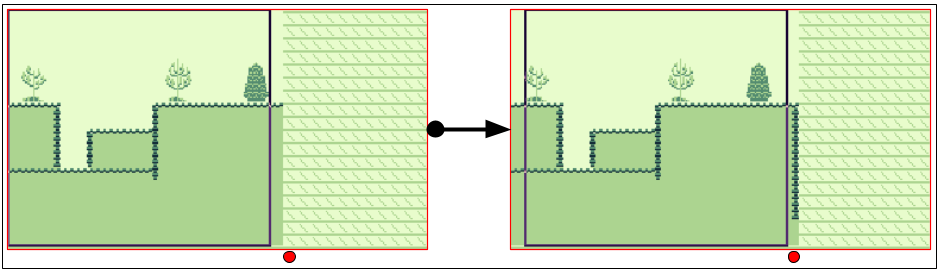
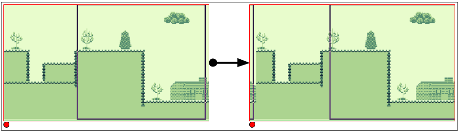

Level Streaming on the Game Boy
Published on 2026-09-14
This article shows how to stream a level in a side-scrolling game, similar to how Super Mario Land does it. I will assume you have a good grasp of basic Game Boy programming concepts, such as vblank, VRAM, tilesets, and tilemaps. If you need a refresher, please check my book Game Boy Coding Adventure.
We will start by explaining why level streaming is necessary. Next, we'll study the fundamental principle behind the streaming technique. We'll then move to the implementation by covering the graphics data organization used for the streaming system. Then, we'll see how to compute which data is required in VRAM on any given frame. Finally, we'll look at how and when to copy that data to VRAM so that the graphics render correctly and on time to the LCD.
By the end of this article, you will have a solid understanding of the steps required to implement a basic level streaming system, upon which you can build features tailored to your game.
The Need for Streaming
The Game Boy screen displays 160x144 pixels of a background tilemap that measures 256x256 pixels (32x32 tiles). Any level larger than this tilemap cannot be stored all at once in VRAM. To overcome this size limitation and achieve smooth side-scrolling across a large level, we must treat the tilemap as a ring buffer, continuously writing new columns of tile indices just before they are displayed on the LCD. This technique is called level streaming, and many commercial games implement it, including early titles like Super Mario Land. This effect is shown in Figure 1, which demonstrates the sample used in this article.
The level scrolls right at a pace of 2 pixels per frame, then scrolls back left at the maximum speed of 8 pixels per frame. In Super Mario Land, scrolling was restricted to the right, but this sample implements both directions since the underlying logic is practically identical, requiring only minor code variations. The d-pad LEFT and RIGHT buttons scroll the screen, while UP and DOWN adjust the scrolling speed. The full source code for this sample is available on GitHub. This article focuses on code snippets from the most critical parts of the implementation.
Figure 2 displays the full 1024x144 level map.

The sample streams this level map into Game Boy VRAM, column by column, creating the side-scrolling effect.
Ring Buffer Mechanics
Before diving into the sample implementation, let's look at the core concept behind streaming: the ring buffer.
By leveraging the horizontal scroll register (rSCX) and the VRAM tilemap, we build a ring buffer for the incoming tilemap columns.
Figure 3 visualizes what happens as horizontal scrolling moves to the right.

These screenshots are taken from BGB's VRAM debugger.
The left image shows the state when the sample launches, where only 21 columns are loaded into VRAM.
At least 21 columns must remain in VRAM at all times because, although the visible screen is 20 columns wide, partial columns can appear on both the left and right edges. This brings the total number of required visible columns to 21 (19 fully visible columns and 2 partially visible columns).
The black rectangle outline in Figure 3 indicates the active screen viewport (160x144 pixels) positioned via the rSCX register.
Looking at the right image, pressing RIGHT on the d-pad moves the viewport further into the level map. The screen enters an area of the tilemap that previously contained no level data (above the red dot). To prevent rendering uninitialized VRAM, the system streams a new column into that empty space ahead of the viewport. This is the core mechanic of level streaming: copying data into VRAM just before it becomes visible on screen.
Figure 4 shows what happens when scrolling reaches the right edge of the VRAM tilemap space.

On the left, the entire width of the 32-column tilemap has been filled. As scrolling continues further to the right, the viewport wraps around to the beginning of the tilemap memory space. The system overwrites the old tilemap column at the far left (above the red dot) with new incoming level data. This continuous overwriting forms the ring buffer behavior, reusing VRAM memory space as the camera advances through larger levels.
Scrolling to the left works identically, except new columns are streamed to the left edge of the screen viewport instead.
Streamed Data Organization
By default, tilemap indices are stored in binary files in row-major order, as illustrated in Figure 5 for a 20x18 tilemap.

In row-major order, full horizontal rows are stored sequentially. However, because our system streams levels one vertical column at a time, we export indices in column-major order instead. Figure 6 illustrates column-major data arrangement for the same 20x18 tilemap.

In column-major order, vertical columns of 18 tile indices are exported sequentially. For our 1024x144 pixels (128x18 tiles) level, the resulting binary file contains 128 sequential column entries of 18 tile indices each.
While row-major data can be used, doing so requires non-sequential memory strides during vblank transfers, introducing significant CPU overhead. We use gconv (part of gbtools) to export tilemaps directly in column-major order. You can use any asset converter or custom script, provided the level map indices are ordered by column.
The level graphics shown in Figure 2 are included in the ROM as shown in Listing 1.
section "graphics_data", rom0 ; Background tileset level_chr: incbin "level.chr" level_chr_end: assert level_chr_end - level_chr < 4 * 1024, "Too many tiles in tileset (maximum 256 tiles)" ; Tilemap columns level_idx: incbin "level.idx" level_idx_end:
First, the tile pattern data is included in ROM. We verify that the tileset does not exceed 256 tiles, as this sample targets the original Game Boy (DMG), though up to 512 tiles can be used on the Game Boy Color. Next, the column-ordered tilemap index array is included. The first 18 bytes represent the leftmost 8x144 pixel vertical strip of Figure 2, the next 18 bytes represent the second strip, and so on.
At sample initialization, the entire tileset pattern data is loaded into VRAM, along with the first 21 level map columns required to populate the initial screen.
Checking Whether Streaming is Required
With the level data prepared in ROM, the system must evaluate on each frame whether a new column needs to be loaded. This check compares two state variables: current scroll position and previous scroll position, as defined in Listing 2.
def WRAM_POSITION_X rb 2 def WRAM_PREVIOUS_POSITION_X rb 2
WRAM_POSITION_X is a 16-bit integer tracking global horizontal position within the 1024x144 pixels level.
It is clamped between 0 and 864 (1024 - 160) to prevent the viewport from scrolling beyond the bounds of the ROM data.
WRAM_PREVIOUS_POSITION_X holds the scroll position value from the preceding frame.
To check if column streaming is required, the system compares the tile column index of the current position against that of the previous frame, as implemented in Listing 3.
Load16 hl, WRAM_POSITION_X
Load16 de, WRAM_PREVIOUS_POSITION_X
ld a, l
and a, $F8
ld b, a
ld a, e
and a, $F8
cp a, b
jp z, .stream_column
; stream a column
.stream_column
Converting a pixel position to a column index requires integer division by 8.
However, we can optimize this check to avoid division entirely.
First, we only need to detect whether the column index has changed, not calculate its exact value.
Second, since movement speed is bounded, the difference between consecutive frames will never exceed one tile column (-1, 0, or +1).
Because column boundaries align to 8-pixel steps (bits 0–2), changes in the column index will register in the low byte of the 16-bit position variables.
By applying a bitmask ($F8) to clear the sub-tile pixel offset (lower 3 bits) and comparing the modified low bytes directly, we can identify column transitions using minimal cycles.
If the masked values match, the viewport remains within the current tile column and no streaming is required.
If they differ, a column boundary was crossed, triggering a streaming calculation.
Emitting a Column Streaming Request
VRAM writes must occur during the vblank period to prevent visible display artifacts or the plain failure of the data transfer. To manage this, the main logic submits a streaming request during frame processing, delaying the actual VRAM transfer until the next vblank interrupt. Listing 4 defines the tracking variables used for this request system.
def WRAM_COLUMN_COPY_SOURCE rb 2 def WRAM_COLUMN_COPY_DESTINATION rb 2
WRAM_COLUMN_COPY_SOURCE holds the ROM address containing the 18 tile indices for the requested column.
WRAM_COLUMN_COPY_DESTINATION holds the target VRAM address where those indices must be written.
A source address of $0000 indicates that no transfer is queued.
When set to a non-zero address, the vblank routine executes the transfer using the source and destination addresses.
When Listing 3 detects a column boundary crossing, the system evaluates scroll direction (left or right) to generate the appropriate transfer addresses, as shown in Listing 5.
; hl = current position
; de = previous position
jp z, .stream_column
; Determine if we are streaming left or right
ld a, l
sub a, e
ld l, a
ld a, h
sbc a, d
ld h, a
bit 7, h
jr z, .stream_request_right
.stream_request_left
; Stream a column to the left
.stream_request_right
; Stream a column to the right
.stream_request_done
.stream_column
Subtracting the previous position (de) from the current position (hl) yields the movement delta.
Checking the sign bit (bit 7 of h) of this delta determines the direction: a positive result indicates rightward movement (streaming new data ahead on the right), while a negative result indicates leftward movement (streaming data on the left).
Listing 6 shows the address calculations executed when scrolling left.
.stream_request_left
; Stream left
; Compute the destination address
; _SCRN0 + low(position_x) / 8
ld a, [WRAM_POSITION_X + 0]
srl a
srl a
srl a
ld l, a
ld h, 0
ld de, _SCRN0
add hl, de
Store16 WRAM_COLUMN_COPY_DESTINATION, hl
; Compute the source address
; index_data + position_x / 8 * 18
Load16 hl, WRAM_POSITION_X
ld d, h
ld e, l
; hl = position_x / 8 * 16
ld a, l
and a, $F8
ld l, a
add hl, hl
; de = position_x / 8 * 2
srl d
rr e
srl d
rr e
ld a, e
and a, $FE
ld e, a
; hl = position_x / 8 * 18
add hl, de
; Add base address of index data
ld de, level_idx
add hl, de
Store16 WRAM_COLUMN_COPY_SOURCE, hl
When streaming left, the target tile column corresponds directly to the left edge of the visible LCD area.
Because this sample uses only horizontal scrolling, transfers always originate at the top row of the tilemap in VRAM (between _SCRN0 to _SCRN0 + 31).
The relative column offset within VRAM is computed by dividing the lower byte of the scroll position by 8 (low(WRAM_POSITION_X) / 8).
Adding this relative offset to _SCRN0 yields the destination address, which gets written to WRAM_COLUMN_COPY_DESTINATION.
To compute the source ROM address, the system locates the target column data in the level array using the formula level_idx + (WRAM_POSITION_X / 8) * 18.
The routine uses bit shifts, masks, and additions to compute the multiplication by 18 efficiently before saving the target address to WRAM_COLUMN_COPY_SOURCE.
Listing 7 shows the corresponding routine used when scrolling right.
.stream_request_right
; Stream right
; Compute the destination address
; _SCRN0 + low(position_x) / 8 + 20
ld a, [WRAM_POSITION_X + 0]
srl a
srl a
srl a
add a, SCRN_X_B
cp a, SCRN_VX_B
jr c, .right_overflow
sub a, SCRN_VX_B
.right_overflow
ld l, a
ld h, 0
ld de, _SCRN0
add hl, de
Store16 WRAM_COLUMN_COPY_DESTINATION, hl
; Compute the source address
; index_data + (position_x + 160) / 8 * 18
Load16 hl, WRAM_POSITION_X
ld de, SCRN_X
add hl, de
ld d, h
ld e, l
; hl = (position_x + 160) / 8 * 16
ld a, l
and a, $F8
ld l, a
add hl, hl
; de = (position_x + 160) / 8 * 2
srl d
rr e
srl d
rr e
ld a, e
and a, $FE
ld e, a
; hl = position_x / 8 * 18
add hl, de
; Add base address of index data
ld de, level_idx
add hl, de
Store16 WRAM_COLUMN_COPY_SOURCE, hl
When streaming to the right side of the screen, destination calculations must target the edge 160 pixels (20 tiles) ahead of the base scroll position. Working directly in tile-column units (adding 20 instead of 160 pixels) allows the system to use fast 8-bit arithmetic and handle the 32-column VRAM wrap-around check efficiently.
The source address math matches the left-streaming logic, offset by 160 pixels to select the leading level map column.
Handling a Column Streaming Request
Queued requests are processed at the very beginning of the vblank handler, as shown in Listing 8.
; Check if there is any request (source is not $0000)
Load16 de, WRAM_COLUMN_COPY_SOURCE ; 10
ld a, d ; 1
or a, e ; 1
jr z, .column_request ; 2
; Copy the requested column
Load16 hl, WRAM_COLUMN_COPY_DESTINATION ; 10
call CopyColumn ; 6
; Clear the request
xor a ; 1
ld [WRAM_COLUMN_COPY_SOURCE + 0], a ; 4
ld [WRAM_COLUMN_COPY_SOURCE + 1], a ; 4
.column_request
The routine evaluates WRAM_COLUMN_COPY_SOURCE.
If set to $0000, processing skips ahead.
$0000 serves as a reliable null-state sentinel because valid level map assets reside higher in ROM memory past the header and interrupt vectors.
If a valid source address is present, the destination parameter is loaded into hl and CopyColumn is called.
Once the transfer finishes, WRAM_COLUMN_COPY_SOURCE is cleared back to $0000.
Listing 9 shows the code of the CopyColumn function.
CopyColumn:
ld bc, SCRN_VX_B ; 2
rept SCRN_Y_B
ld a, [de] ; 2
inc de ; 2
ld [hl], a ; 2
add hl, bc ; 2
endr
ret ; 4
With de pointing to ROM source data and hl pointing to target VRAM, the unrolled loop transfers 18 contiguous ROM bytes.
Because the source data is pre-ordered in column-major format, the source pointer advances sequentially with inc de.
If the tilemap were stored in row-major format, calculating the source step would require adding 32 bytes per tile to de.
This would be incovenient as only hl can be used for any 16-bit arithmetic operation beyond increment and decrement, but hl is already used for the destination address.
Column-major order is thus critical to avoid increasing vblank cycle execution overhead.
The total execution cost for processing a stream request is 185 cycles.
The bulk of it is 146 cycles inside CopyColumn, with 144 consumed by the 18-iteration rept block alone.
The remaining 39 cycles account for request validation, parameter setup, and queue clearing.
This overhead fits comfortably inside the 1140 cycles of the vblank window, leaving ample time for OAM DMA transfers, palette adjustments, or animation updates.
Finally, horizontal scrolling is updated at the end of the vblank as shown in Listing 10.
ld a, [WRAM_POSITION_X + 0] ld [rSCX], a
rSCX
Writing the low byte of WRAM_POSITION_X directly to rSCX aligns hardware rendering with the VRAM ring buffer, completing the seamless scroll effect.
Conclusion
This article introduced an approach to level streaming for Game Boy sidescrolling games. You should now have a good grasp of how to use a tilemap and horizontal scrolling to create a ring buffer to stream the columns of a level map.
Using the same technique, you could also implement a vertically scrolling level, such as those used in a shoot 'em ups, streaming rows of indices instead of columns. You could even extend the streaming system to handle both horizontal and vertical streaming. This will consume more cycles in your vblank, but it is completely realistic to stream both a row and a column inside a single vblank, especially if you use the double speed mode on the Game Boy Color. It is also possible to go beyong 8-pixel strides by streaming several columns at a time. It all depends on what the game aims for.
Art Attribution
The background tileset used in the sample is from VEXED. The font is from Off The Books.